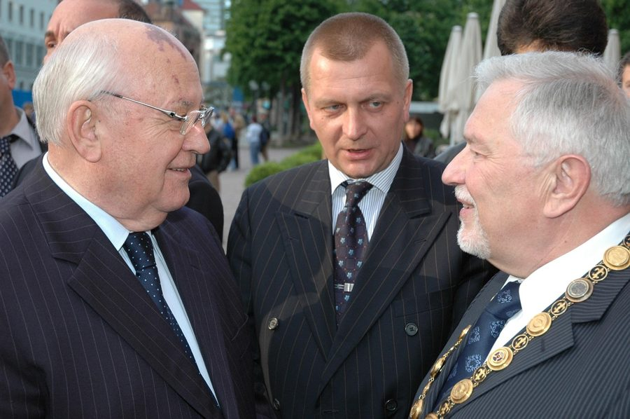
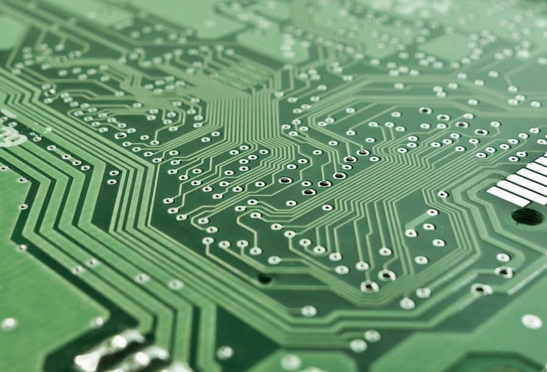
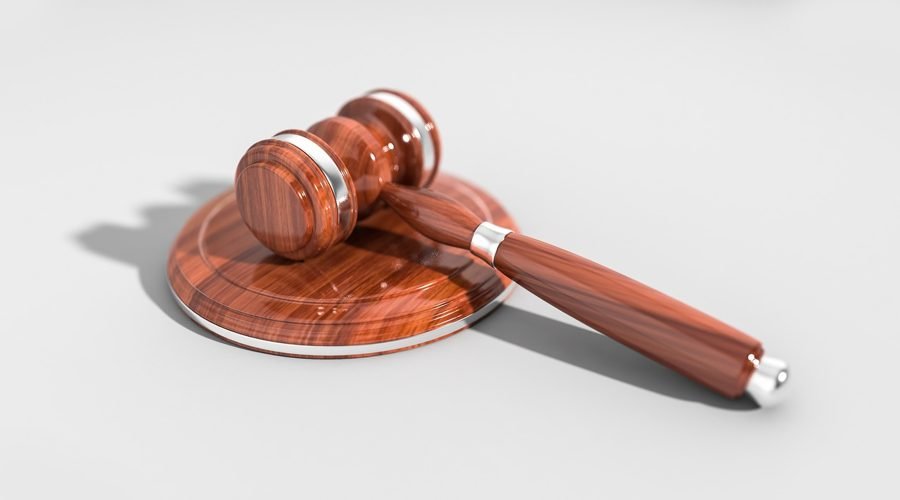
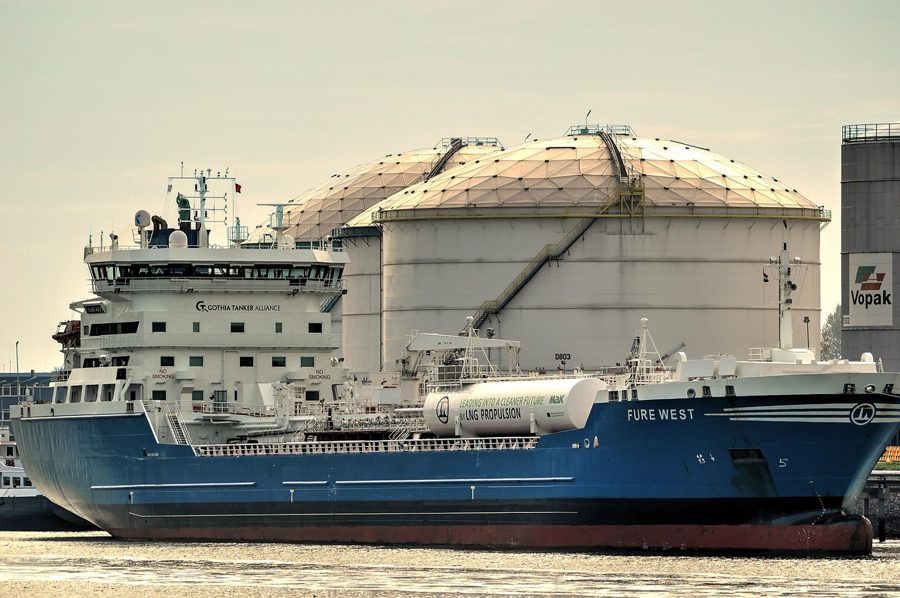
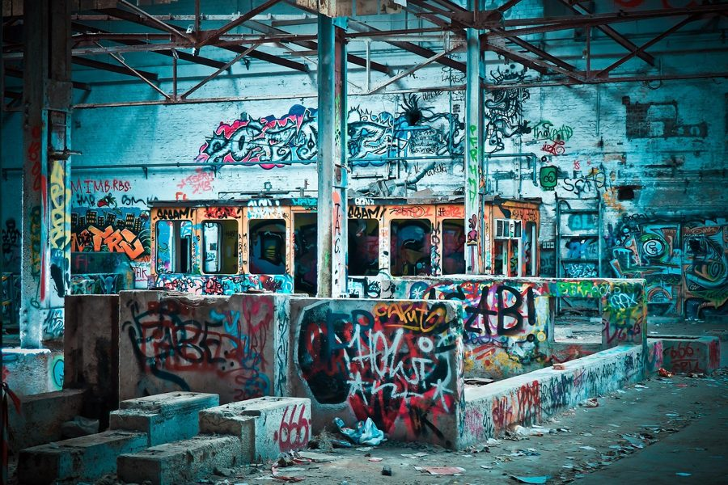

01
한국 수출 1조 달러 눈앞…역대 최대치
경제반도체 수출 4배 급증 힘입어 이달도 역대 최대 실적 기록

이달 한국 수출이 반도체 수출 급증에 힘입어 역대 최대 실적을 기록하며 일조 달러 달성을 눈앞에 뒀습니다.
반도체 수출이 기존보다 네 배나 폭증하며 전체 수출 실적을 강력하게 견인하고 있는 점이 핵심입니다.
세계적인 반도체 수요 회복 흐름이 지속되며 연말까지 최고 기록을 이어갈 수 있을지 주목됩니다.
참고: MBC 뉴스
이달 한국 수출이 반도체 수출 급증에 힘입어 역대 최대 실적을 기록하며 일조 달러 달성을 눈앞에 뒀습니다.
반도체 수출이 기존보다 네 배나 폭증하며 전체 수출 실적을 강력하게 견인하고 있는 점이 핵심입니다.
세계적인 반도체 수요 회복 흐름이 지속되며 연말까지 최고 기록을 이어갈 수 있을지 주목됩니다.

한국전력에서 고객 백오십만 명의 개인정보가 유출되는 대형 보안 사고가 발생했습니다.
유출된 정보에는 주민등록번호 등 민감한 정보가 대거 포함되어 있어 추가 피해 우려가 커지고 있습니다.
한전의 보안 관리 실태에 대한 조사와 함께 피해 보상 및 재발 방지 대책 마련이 시급한 상황입니다.

우크라이나 전쟁 여파가 북아프리카까지 퍼지며 리비아에서 러시아 군함이 드론 공격으로 침몰했습니다.
유럽을 넘어 아프리카 대륙까지 무장 충돌이 번지면서 전쟁의 양상이 국제적으로 복잡해지고 있습니다.
러시아의 반격 여부와 함께 이번 사건이 중동 및 북아프리카 정세에 미칠 영향이 주목됩니다.
트럼프 전 대통령이 합의가 무산될 경우 새해에 이란을 공격하겠다고 경고하며 압박에 나섰습니다.
이에 이란 혁명수비대는 신형 미사일 발사대를 전격 공개하며 굴욕을 주겠다고 응수했습니다.
새해를 앞두고 미·이란 간의 군사적 대치 수위가 실제 무력 충돌로 이어질지 우려가 깊어집니다.

김정은 위원장이 신임 러시아 대사의 신임장을 직접 수령하는 파격적인 모습을 보였습니다.
북한에서 최고지도자가 대사 신임장을 직접 받는 것은 삼십 년 만으로, 러시아와의 특수 관계를 강조하려는 의도입니다.
밀착하는 북·러 관계가 한반도와 동아시아 안보 지형에 어떤 변수를 가져올지 주시해야 합니다.

국산 인공지능 반도체가 본격적인 상용화 단계에 진입하며 국내 대기업에 공급되기 시작했습니다.
리벨리온이 자체 개발한 신경망처리장치 칩 서버 마흔 대를 에스케이텔레콤에 납품하는 성과를 거뒀습니다.
외산 칩 독주 체제 속에서 국산 반도체 생태계가 자립도를 높일 수 있을지 기대를 모읍니다.

엔비디아의 첨단 반도체 칩이 캄보디아 범죄조직을 통해 중국으로 우회 밀수되었다는 의혹이 불거졌습니다.
미국 당국은 수출 통제 위반 여부를 엄격히 따지겠다고 밝혀 미·중 기술 갈등이 더 심화될 전망입니다.
이번 조사가 글로벌 반도체 공급망과 관련 기업들의 입지에 어떤 파급력을 미칠지 주목됩니다.

전국법관대표회의 의장이 야당의 대법원장 탄핵 추진을 향해 선을 넘었다며 강하게 비판했습니다.
사법부의 독립성이 심각하게 위협받는 상황에서 판사들이 더 이상 침묵으로 방관하지 않겠다는 의지입니다.
정치권과 사법부 간의 정면충돌 양상이 사법 개혁 논의에 어떤 영향을 미칠지 관심이 쏠립니다.

정부가 겨울철 에너지 수급 안정을 위해 카타르에 액화천연가스 우선 공급을 공식 요청했습니다.
산업통상자원부 장관이 카타르 에너지 장관과 직접 만나 전략적 에너지 협력 방안을 논의했습니다.
글로벌 자원 확보전이 치열한 가운데 국내 에너지 수급 불안을 해소할 조치로 이어질지 주목됩니다.

독일에서 전기요금이 폭등하면서 주요 철강 공장이 결국 생산 중단을 선언했습니다.
치솟는 에너지 비용이 유럽 제조업 전반의 경쟁력을 크게 갉아먹고 있는 대표적인 사례입니다.
고비용 구조를 견디지 못한 유럽 산업계의 셧다운 공포가 국내 산업에 미칠 영향도 대비가 필요합니다.